2026 Higher Biology - Paper 2 marking instructions
Source: Scottish Qualifications Authority (SQA) / Qualifications Scotland. This is a StemInteract HTML companion, not an official HTML edition. Selectable text is supplied alongside original page images. Use the images or original PDF for equations, powers, fractions, vector notation, tables and diagrams; text extraction cannot fully preserve mathematical layout.
Jump to a question
PDF page 1
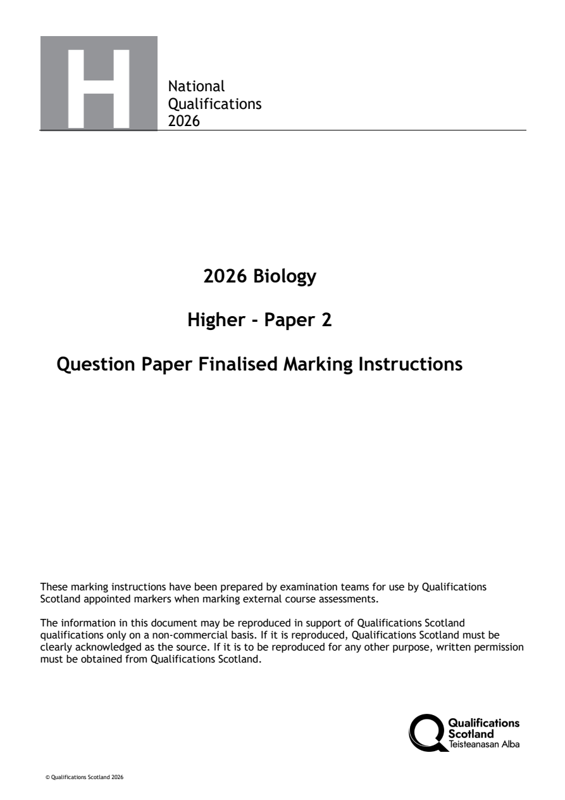
Selectable page text
National
Qualifications
2026
2026 Biology
Higher - Paper 2
Question Paper Finalised Marking Instructions
These marking instructions have been prepared by examination teams for use by Qualifications
Scotland appointed markers when marking external course assessments.
The information in this document may be reproduced in support of Qualifications Scotland
qualifications only on a non-commercial basis. If it is reproduced, Qualifications Scotland must be
clearly acknowledged as the source. If it is to be reproduced for any other purpose, written permission
must be obtained from Qualifications Scotland.
© Qualifications Scotland 2026PDF page 2
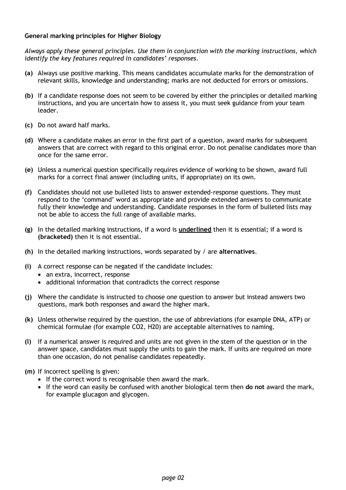
Selectable page text
General marking principles for Higher Biology
Always apply these general principles. Use them in conjunction with the marking instructions, which
identify the key features required in candidates’ responses.
(a) Always use positive marking. This means candidates accumulate marks for the demonstration of
relevant skills, knowledge and understanding; marks are not deducted for errors or omissions.
(b) If a candidate response does not seem to be covered by either the principles or detailed marking
instructions, and you are uncertain how to assess it, you must seek guidance from your team
leader.
(c) Do not award half marks.
(d) Where a candidate makes an error in the first part of a question, award marks for subsequent
answers that are correct with regard to this original error. Do not penalise candidates more than
once for the same error.
(e) Unless a numerical question specifically requires evidence of working to be shown, award full
marks for a correct final answer (including units, if appropriate) on its own.
(f) Candidates should not use bulleted lists to answer extended-response questions. They must
respond to the ‘command’ word as appropriate and provide extended answers to communicate
fully their knowledge and understanding. Candidate responses in the form of bulleted lists may
not be able to access the full range of available marks.
(g) In the detailed marking instructions, if a word is underlined then it is essential; if a word is
(bracketed) then it is not essential.
(h) In the detailed marking instructions, words separated by / are alternatives.
(i) A correct response can be negated if the candidate includes:
• an extra, incorrect, response
• additional information that contradicts the correct response
(j) Where the candidate is instructed to choose one question to answer but instead answers two
questions, mark both responses and award the higher mark.
(k) Unless otherwise required by the question, the use of abbreviations (for example DNA, ATP) or
chemical formulae (for example CO2, H20) are acceptable alternatives to naming.
(l) If a numerical answer is required and units are not given in the stem of the question or in the
answer space, candidates must supply the units to gain the mark. If units are required on more
than one occasion, do not penalise candidates repeatedly.
(m) If incorrect spelling is given:
• If the correct word is recognisable then award the mark.
• If the word can easily be confused with another biological term then do not award the mark,
for example glucagon and glycogen.
page 02PDF page 3
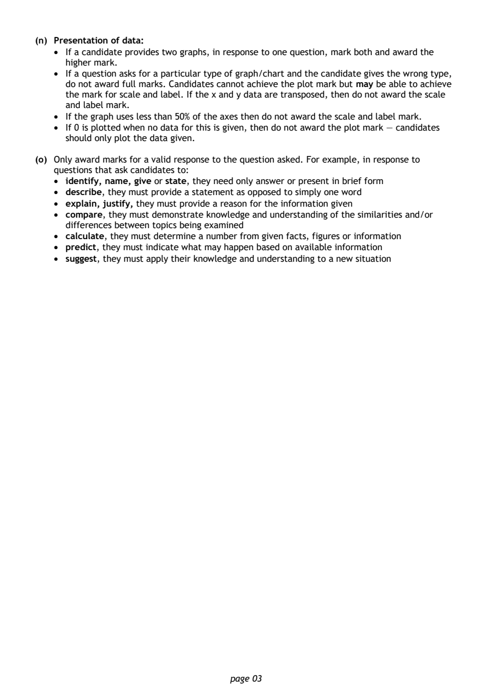
Selectable page text
(n) Presentation of data:
• If a candidate provides two graphs, in response to one question, mark both and award the
higher mark.
• If a question asks for a particular type of graph/chart and the candidate gives the wrong type,
do not award full marks. Candidates cannot achieve the plot mark but may be able to achieve
the mark for scale and label. If the x and y data are transposed, then do not award the scale
and label mark.
• If the graph uses less than 50% of the axes then do not award the scale and label mark.
• If 0 is plotted when no data for this is given, then do not award the plot mark — candidates
should only plot the data given.
(o) Only award marks for a valid response to the question asked. For example, in response to
questions that ask candidates to:
• identify, name, give or state, they need only answer or present in brief form
• describe, they must provide a statement as opposed to simply one word
• explain, justify, they must provide a reason for the information given
• compare, they must demonstrate knowledge and understanding of the similarities and/or
differences between topics being examined
• calculate, they must determine a number from given facts, figures or information
• predict, they must indicate what may happen based on available information
• suggest, they must apply their knowledge and understanding to a new situation
page 03PDF page 4
Paper 2, Question 1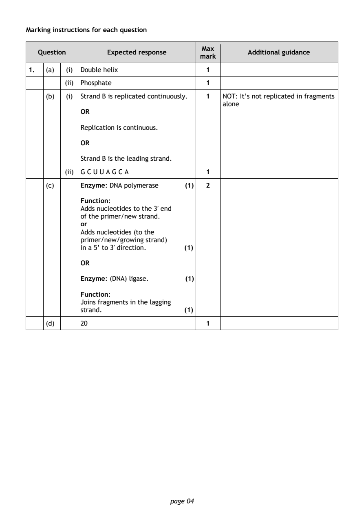
Selectable page text
Marking instructions for each question
Max
Question Expected response Additional guidance
mark
1. (a) (i) Double helix 1
(ii) Phosphate 1
(b) (i) Strand B is replicated continuously. 1 NOT: It’s not replicated in fragments
alone
OR
Replication is continuous.
OR
Strand B is the leading strand.
(ii) G C U U A G C A 1
(c) Enzyme: DNA polymerase (1) 2
Function:
Adds nucleotides to the 3′ end
of the primer/new strand.
or
Adds nucleotides (to the
primer/new/growing strand)
in a 5’ to 3′ direction. (1)
OR
Enzyme: (DNA) ligase. (1)
Function:
Joins fragments in the lagging
strand. (1)
(d) 20 1
page 04PDF page 5
Paper 2, Question 2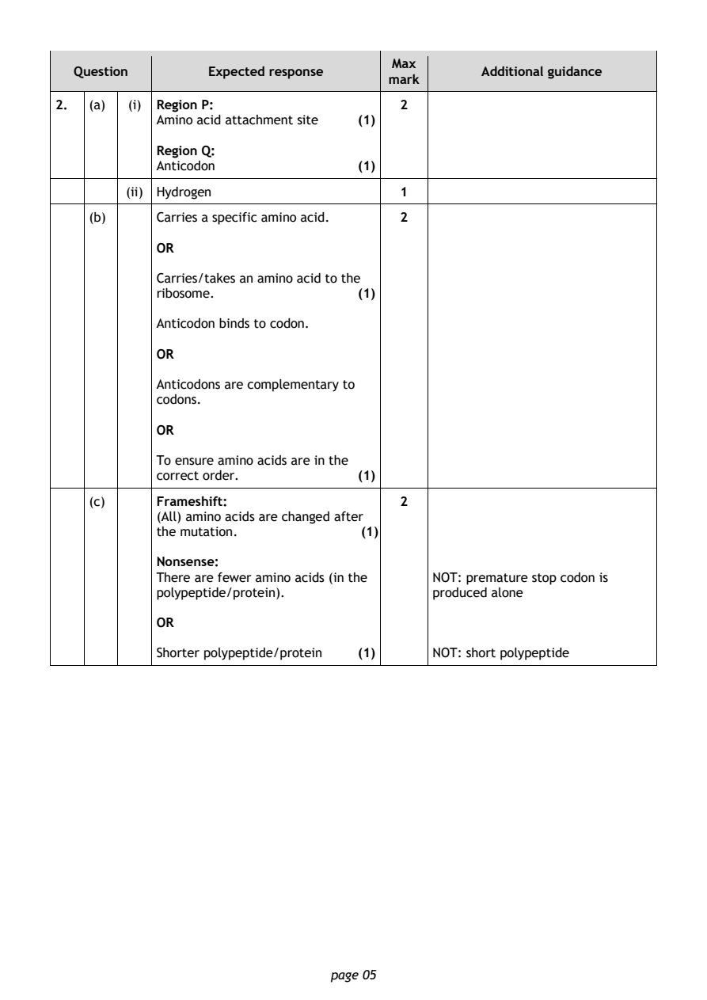
Selectable page text
Max
Question Expected response Additional guidance
mark
2. (a) (i) Region P: 2
Amino acid attachment site (1)
Region Q:
Anticodon (1)
(ii) Hydrogen 1
(b) Carries a specific amino acid. 2
OR
Carries/takes an amino acid to the
ribosome. (1)
Anticodon binds to codon.
OR
Anticodons are complementary to
codons.
OR
To ensure amino acids are in the
correct order. (1)
(c) Frameshift: 2
(All) amino acids are changed after
the mutation. (1)
Nonsense:
There are fewer amino acids (in the NOT: premature stop codon is
polypeptide/protein). produced alone
OR
Shorter polypeptide/protein (1) NOT: short polypeptide
page 05PDF page 6
Paper 2, Question 3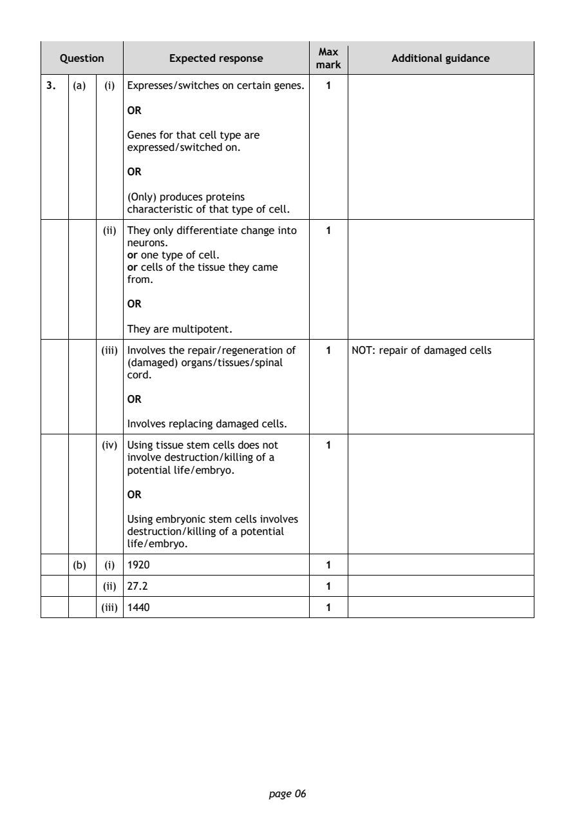
Selectable page text
Max
Question Expected response Additional guidance
mark
3. (a) (i) Expresses/switches on certain genes. 1
OR
Genes for that cell type are
expressed/switched on.
OR
(Only) produces proteins
characteristic of that type of cell.
(ii) They only differentiate change into 1
neurons.
or one type of cell.
or cells of the tissue they came
from.
OR
They are multipotent.
(iii) Involves the repair/regeneration of 1 NOT: repair of damaged cells
(damaged) organs/tissues/spinal
cord.
OR
Involves replacing damaged cells.
(iv) Using tissue stem cells does not 1
involve destruction/killing of a
potential life/embryo.
OR
Using embryonic stem cells involves
destruction/killing of a potential
life/embryo.
(b) (i) 1920 1
(ii) 27.2 1
(iii) 1440 1
page 06PDF page 7
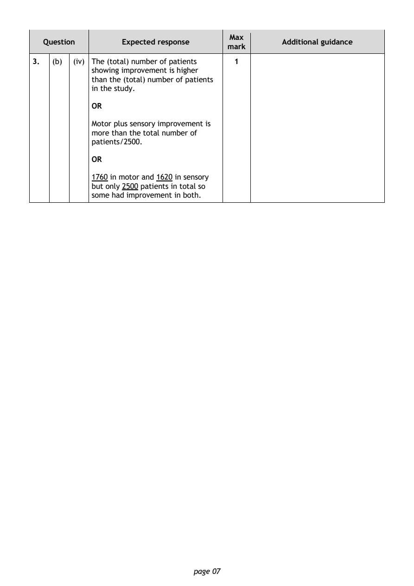
Selectable page text
Max
Question Expected response Additional guidance
mark
3. (b) (iv) The (total) number of patients 1
showing improvement is higher
than the (total) number of patients
in the study.
OR
Motor plus sensory improvement is
more than the total number of
patients/2500.
OR
1760 in motor and 1620 in sensory
but only 2500 patients in total so
some had improvement in both.
page 07PDF page 8
Paper 2, Question 4Paper 2, Question 5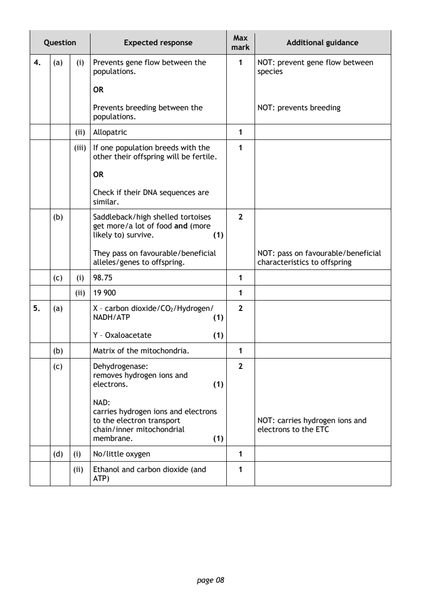
Selectable page text
Max
Question Expected response Additional guidance
mark
4. (a) (i) Prevents gene flow between the 1 NOT: prevent gene flow between
populations. species
OR
Prevents breeding between the NOT: prevents breeding
populations.
(ii) Allopatric 1
(iii) If one population breeds with the 1
other their offspring will be fertile.
OR
Check if their DNA sequences are
similar.
(b) Saddleback/high shelled tortoises 2
get more/a lot of food and (more
likely to) survive. (1)
They pass on favourable/beneficial NOT: pass on favourable/beneficial
alleles/genes to offspring. characteristics to offspring
(c) (i) 98.75 1
(ii) 19 900 1
5. (a) X – carbon dioxide/CO /Hydrogen/ 2
2
NADH/ATP (1)
Y – Oxaloacetate (1)
(b) Matrix of the mitochondria. 1
(c) Dehydrogenase: 2
removes hydrogen ions and
electrons. (1)
NAD:
carries hydrogen ions and electrons
to the electron transport NOT: carries hydrogen ions and
chain/inner mitochondrial electrons to the ETC
membrane. (1)
(d) (i) No/little oxygen 1
(ii) Ethanol and carbon dioxide (and 1
ATP)
page 08PDF page 9
Paper 2, Question 6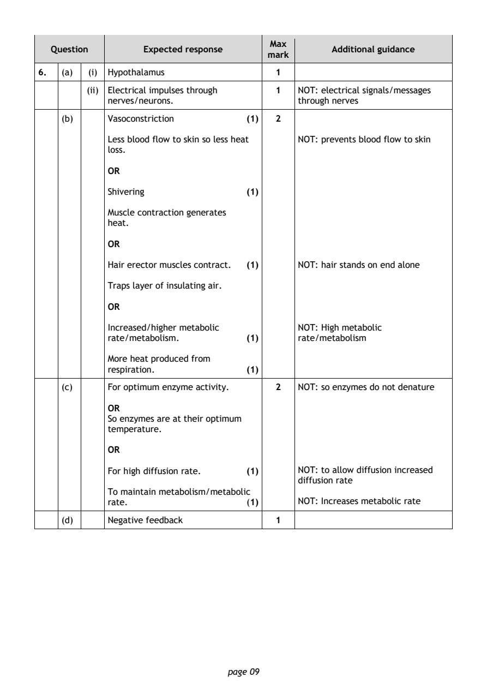
Selectable page text
Max
Question Expected response Additional guidance
mark
6. (a) (i) Hypothalamus 1
(ii) Electrical impulses through 1 NOT: electrical signals/messages
nerves/neurons. through nerves
(b) Vasoconstriction (1) 2
Less blood flow to skin so less heat NOT: prevents blood flow to skin
loss.
OR
Shivering (1)
Muscle contraction generates
heat.
OR
Hair erector muscles contract. (1) NOT: hair stands on end alone
Traps layer of insulating air.
OR
Increased/higher metabolic NOT: High metabolic
rate/metabolism. (1) rate/metabolism
More heat produced from
respiration. (1)
(c) For optimum enzyme activity. 2 NOT: so enzymes do not denature
OR
So enzymes are at their optimum
temperature.
OR
For high diffusion rate. (1) NOT: to allow diffusion increased
diffusion rate
To maintain metabolism/metabolic
rate. (1) NOT: Increases metabolic rate
(d) Negative feedback 1
page 09PDF page 10
Paper 2, Question 7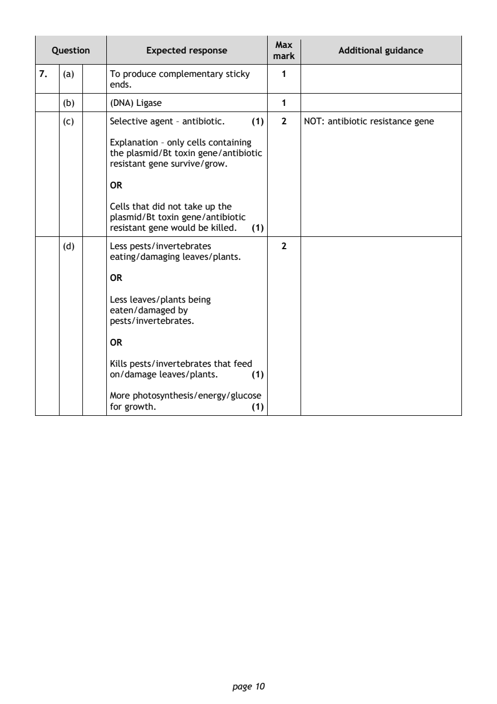
Selectable page text
Max
Question Expected response Additional guidance
mark
7. (a) To produce complementary sticky 1
ends.
(b) (DNA) Ligase 1
(c) Selective agent – antibiotic. (1) 2 NOT: antibiotic resistance gene
Explanation – only cells containing
the plasmid/Bt toxin gene/antibiotic
resistant gene survive/grow.
OR
Cells that did not take up the
plasmid/Bt toxin gene/antibiotic
resistant gene would be killed. (1)
(d) Less pests/invertebrates 2
eating/damaging leaves/plants.
OR
Less leaves/plants being
eaten/damaged by
pests/invertebrates.
OR
Kills pests/invertebrates that feed
on/damage leaves/plants. (1)
More photosynthesis/energy/glucose
for growth. (1)
page 10PDF page 11
Paper 2, Question 8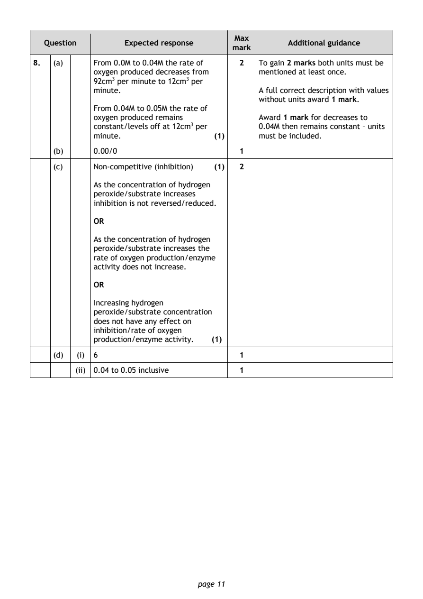
Selectable page text
Max
Question Expected response Additional guidance
mark
8. (a) From 0.0M to 0.04M the rate of 2 To gain 2 marks both units must be
oxygen produced decreases from mentioned at least once.
92cm³ per minute to 12cm³ per
minute. A full correct description with values
without units award 1 mark.
From 0.04M to 0.05M the rate of
oxygen produced remains Award 1 mark for decreases to
constant/levels off at 12cm³ per 0.04M then remains constant – units
minute. (1) must be included.
(b) 0.00/0 1
(c) Non-competitive (inhibition) (1) 2
As the concentration of hydrogen
peroxide/substrate increases
inhibition is not reversed/reduced.
OR
As the concentration of hydrogen
peroxide/substrate increases the
rate of oxygen production/enzyme
activity does not increase.
OR
Increasing hydrogen
peroxide/substrate concentration
does not have any effect on
inhibition/rate of oxygen
production/enzyme activity. (1)
(d) (i) 6 1
(ii) 0.04 to 0.05 inclusive 1
page 11PDF page 12
Paper 2, Question 9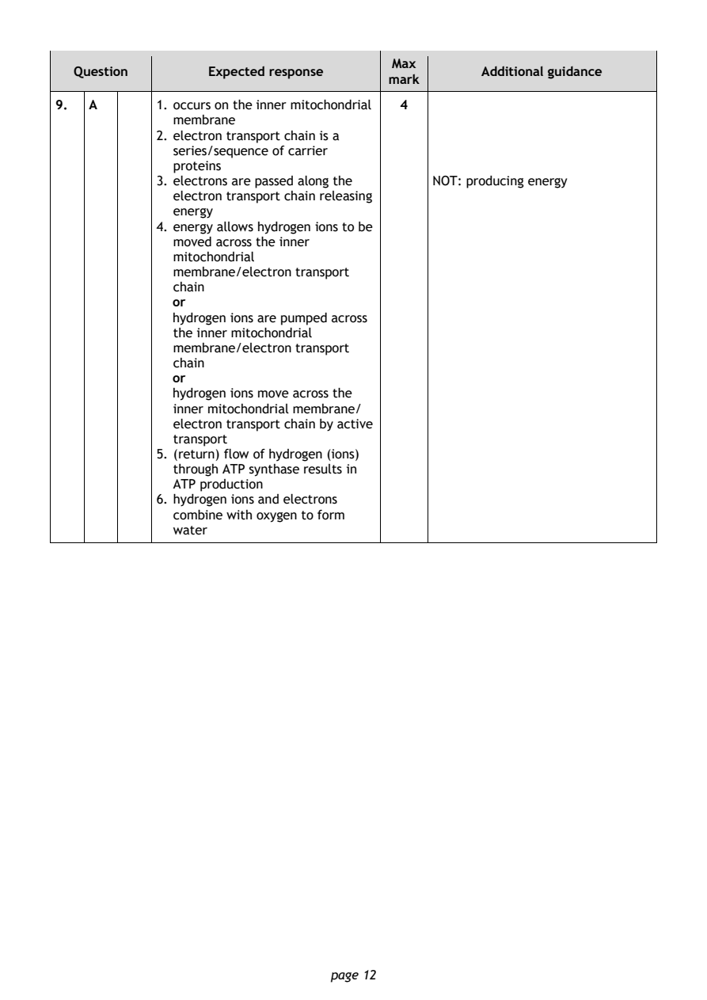
Selectable page text
Max
Question Expected response Additional guidance
mark
9. A 1. occurs on the inner mitochondrial 4
membrane
2. electron transport chain is a
series/sequence of carrier
proteins
3. electrons are passed along the NOT: producing energy
electron transport chain releasing
energy
4. energy allows hydrogen ions to be
moved across the inner
mitochondrial
membrane/electron transport
chain
or
hydrogen ions are pumped across
the inner mitochondrial
membrane/electron transport
chain
or
hydrogen ions move across the
inner mitochondrial membrane/
electron transport chain by active
transport
5. (return) flow of hydrogen (ions)
through ATP synthase results in
ATP production
6. hydrogen ions and electrons
combine with oxygen to form
water
page 12PDF page 13
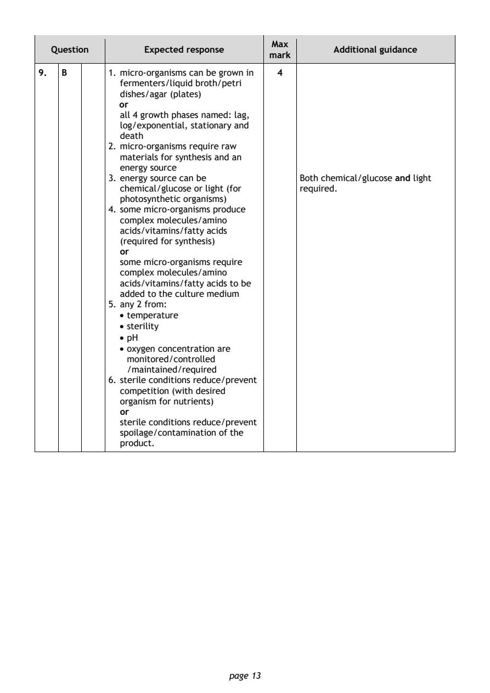
Selectable page text
Max
Question Expected response Additional guidance
mark
9. B 1. micro-organisms can be grown in 4
fermenters/liquid broth/petri
dishes/agar (plates)
or
all 4 growth phases named: lag,
log/exponential, stationary and
death
2. micro-organisms require raw
materials for synthesis and an
energy source
3. energy source can be Both chemical/glucose and light
chemical/glucose or light (for required.
photosynthetic organisms)
4. some micro-organisms produce
complex molecules/amino
acids/vitamins/fatty acids
(required for synthesis)
or
some micro-organisms require
complex molecules/amino
acids/vitamins/fatty acids to be
added to the culture medium
5. any 2 from:
• temperature
• sterility
• pH
• oxygen concentration are
monitored/controlled
/maintained/required
6. sterile conditions reduce/prevent
competition (with desired
organism for nutrients)
or
sterile conditions reduce/prevent
spoilage/contamination of the
product.
page 13PDF page 14
Paper 2, Question 10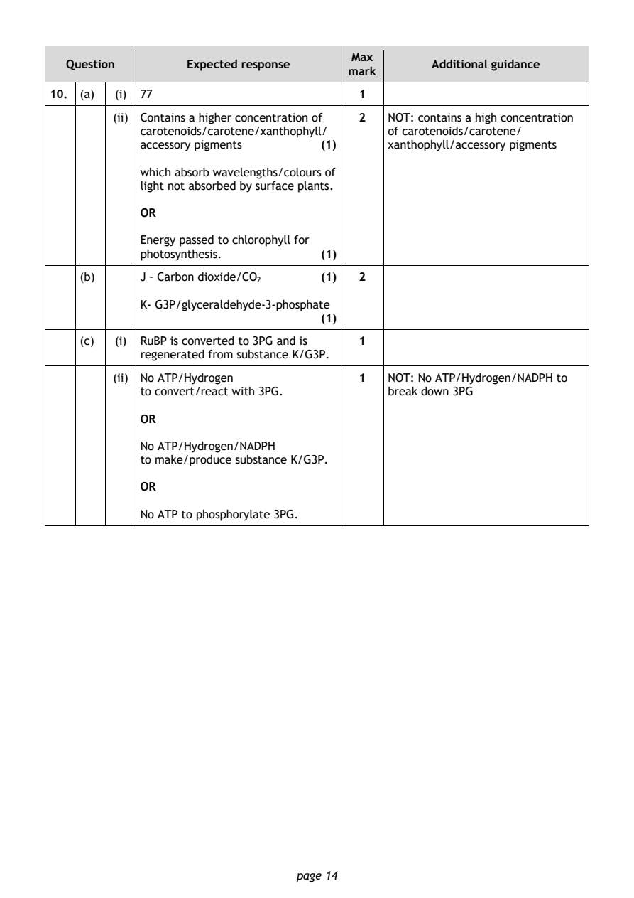
Selectable page text
Max
Question Expected response Additional guidance
mark
10. (a) (i) 77 1
(ii) Contains a higher concentration of 2 NOT: contains a high concentration
carotenoids/carotene/xanthophyll/ of carotenoids/carotene/
accessory pigments (1) xanthophyll/accessory pigments
which absorb wavelengths/colours of
light not absorbed by surface plants.
OR
Energy passed to chlorophyll for
photosynthesis. (1)
(b) J – Carbon dioxide/CO (1) 2
2
K- G3P/glyceraldehyde-3-phosphate
(1)
(c) (i) RuBP is converted to 3PG and is 1
regenerated from substance K/G3P.
(ii) No ATP/Hydrogen 1 NOT: No ATP/Hydrogen/NADPH to
to convert/react with 3PG. break down 3PG
OR
No ATP/Hydrogen/NADPH
to make/produce substance K/G3P.
OR
No ATP to phosphorylate 3PG.
page 14PDF page 15
Paper 2, Question 11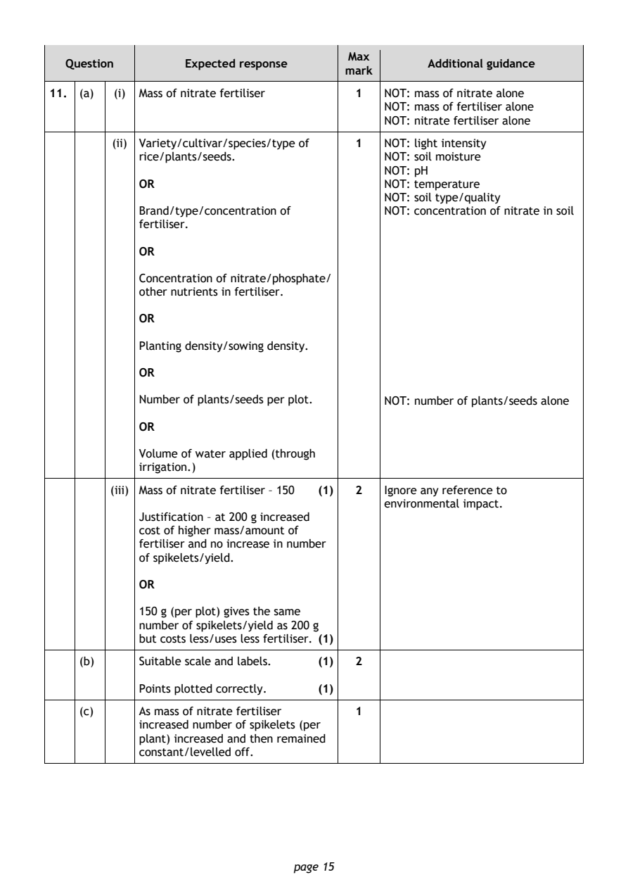
Selectable page text
Max
Question Expected response Additional guidance
mark
11. (a) (i) Mass of nitrate fertiliser 1 NOT: mass of nitrate alone
NOT: mass of fertiliser alone
NOT: nitrate fertiliser alone
(ii) Variety/cultivar/species/type of 1 NOT: light intensity
rice/plants/seeds. NOT: soil moisture
NOT: pH
OR NOT: temperature
NOT: soil type/quality
Brand/type/concentration of NOT: concentration of nitrate in soil
fertiliser.
OR
Concentration of nitrate/phosphate/
other nutrients in fertiliser.
OR
Planting density/sowing density.
OR
Number of plants/seeds per plot. NOT: number of plants/seeds alone
OR
Volume of water applied (through
irrigation.)
(iii) Mass of nitrate fertiliser – 150 (1) 2 Ignore any reference to
environmental impact.
Justification – at 200 g increased
cost of higher mass/amount of
fertiliser and no increase in number
of spikelets/yield.
OR
150 g (per plot) gives the same
number of spikelets/yield as 200 g
but costs less/uses less fertiliser. (1)
(b) Suitable scale and labels. (1) 2
Points plotted correctly. (1)
(c) As mass of nitrate fertiliser 1
increased number of spikelets (per
plant) increased and then remained
constant/levelled off.
page 15PDF page 16
Paper 2, Question 12Paper 2, Question 13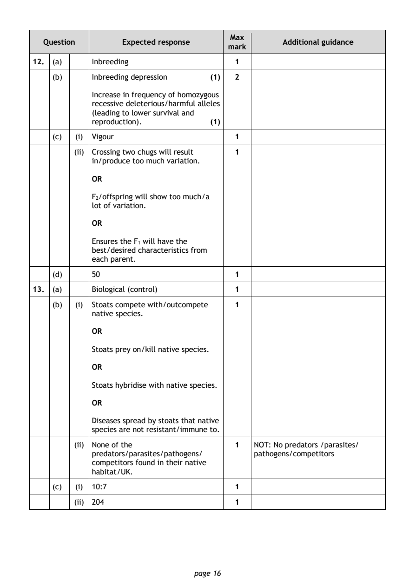
Selectable page text
Max
Question Expected response Additional guidance
mark
12. (a) Inbreeding 1
(b) Inbreeding depression (1) 2
Increase in frequency of homozygous
recessive deleterious/harmful alleles
(leading to lower survival and
reproduction). (1)
(c) (i) Vigour 1
(ii) Crossing two chugs will result 1
in/produce too much variation.
OR
F /offspring will show too much/a
lo²t of variation.
OR
Ensures the F will have the
best/desired ¹characteristics from
each parent.
(d) 50 1
13. (a) Biological (control) 1
(b) (i) Stoats compete with/outcompete 1
native species.
OR
Stoats prey on/kill native species.
OR
Stoats hybridise with native species.
OR
Diseases spread by stoats that native
species are not resistant/immune to.
(ii) None of the 1 NOT: No predators /parasites/
predators/parasites/pathogens/ pathogens/competitors
competitors found in their native
habitat/UK.
(c) (i) 10:7 1
(ii) 204 1
page 16PDF page 17
Paper 2, Question 14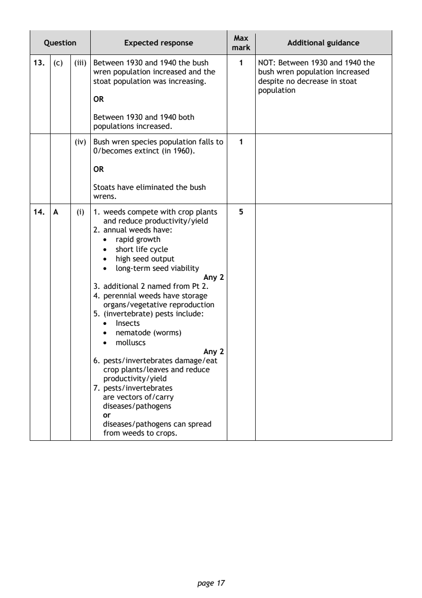
Selectable page text
Max
Question Expected response Additional guidance
mark
13. (c) (iii) Between 1930 and 1940 the bush 1 NOT: Between 1930 and 1940 the
wren population increased and the bush wren population increased
stoat population was increasing. despite no decrease in stoat
population
OR
Between 1930 and 1940 both
populations increased.
(iv) Bush wren species population falls to 1
0/becomes extinct (in 1960).
OR
Stoats have eliminated the bush
wrens.
14. A (i) 1. weeds compete with crop plants 5
and reduce productivity/yield
2. annual weeds have:
• rapid growth
• short life cycle
• high seed output
• long-term seed viability
Any 2
3. additional 2 named from Pt 2.
4. perennial weeds have storage
organs/vegetative reproduction
5. (invertebrate) pests include:
• Insects
• nematode (worms)
• molluscs
Any 2
6. pests/invertebrates damage/eat
crop plants/leaves and reduce
productivity/yield
7. pests/invertebrates
are vectors of/carry
diseases/pathogens
or
diseases/pathogens can spread
from weeds to crops.
page 17PDF page 18
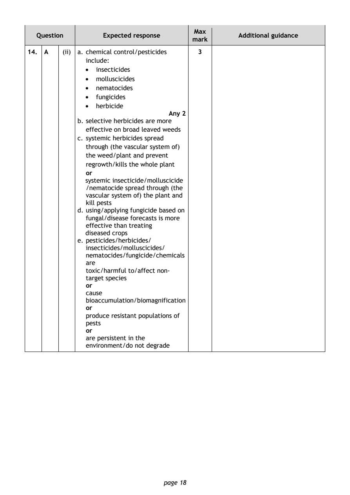
Selectable page text
Max
Question Expected response Additional guidance
mark
14. A (ii) a. chemical control/pesticides 3
include:
• insecticides
• molluscicides
• nematocides
• fungicides
• herbicide
Any 2
b. selective herbicides are more
effective on broad leaved weeds
c. systemic herbicides spread
through (the vascular system of)
the weed/plant and prevent
regrowth/kills the whole plant
or
systemic insecticide/molluscicide
/nematocide spread through (the
vascular system of) the plant and
kill pests
d. using/applying fungicide based on
fungal/disease forecasts is more
effective than treating
diseased crops
e. pesticides/herbicides/
insecticides/molluscicides/
nematocides/fungicide/chemicals
are
toxic/harmful to/affect non-
target species
or
cause
bioaccumulation/biomagnification
or
produce resistant populations of
pests
or
are persistent in the
environment/do not degrade
page 18PDF page 19
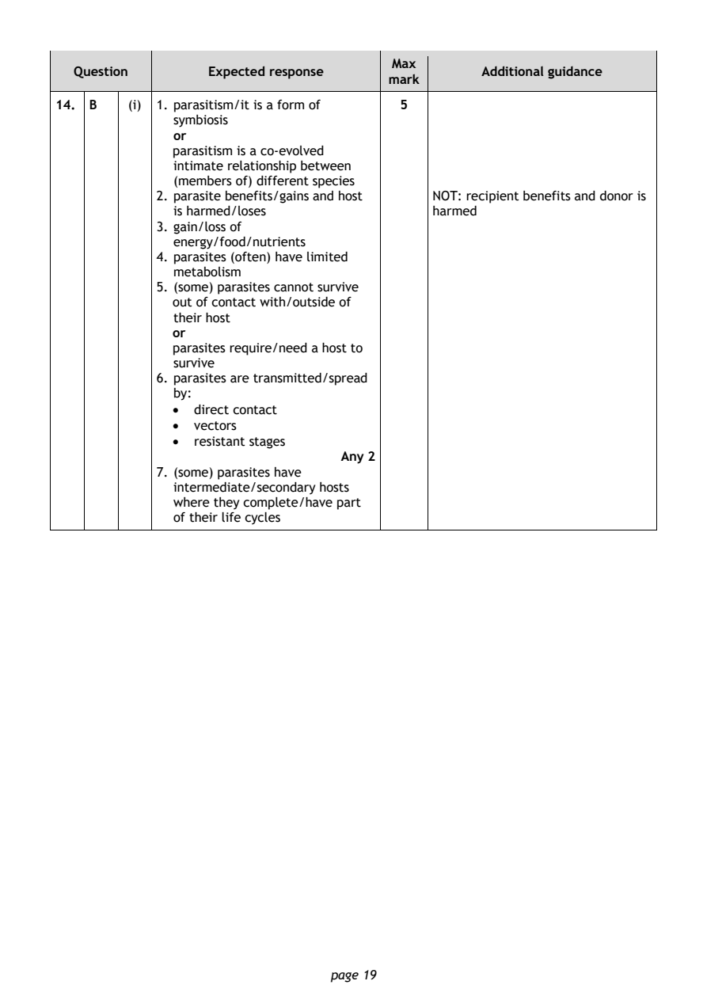
Selectable page text
Max
Question Expected response Additional guidance
mark
14. B (i) 1. parasitism/it is a form of 5
symbiosis
or
parasitism is a co-evolved
intimate relationship between
(members of) different species
2. parasite benefits/gains and host NOT: recipient benefits and donor is
is harmed/loses harmed
3. gain/loss of
energy/food/nutrients
4. parasites (often) have limited
metabolism
5. (some) parasites cannot survive
out of contact with/outside of
their host
or
parasites require/need a host to
survive
6. parasites are transmitted/spread
by:
• direct contact
• vectors
• resistant stages
Any 2
7. (some) parasites have
intermediate/secondary hosts
where they complete/have part
of their life cycles
page 19PDF page 20
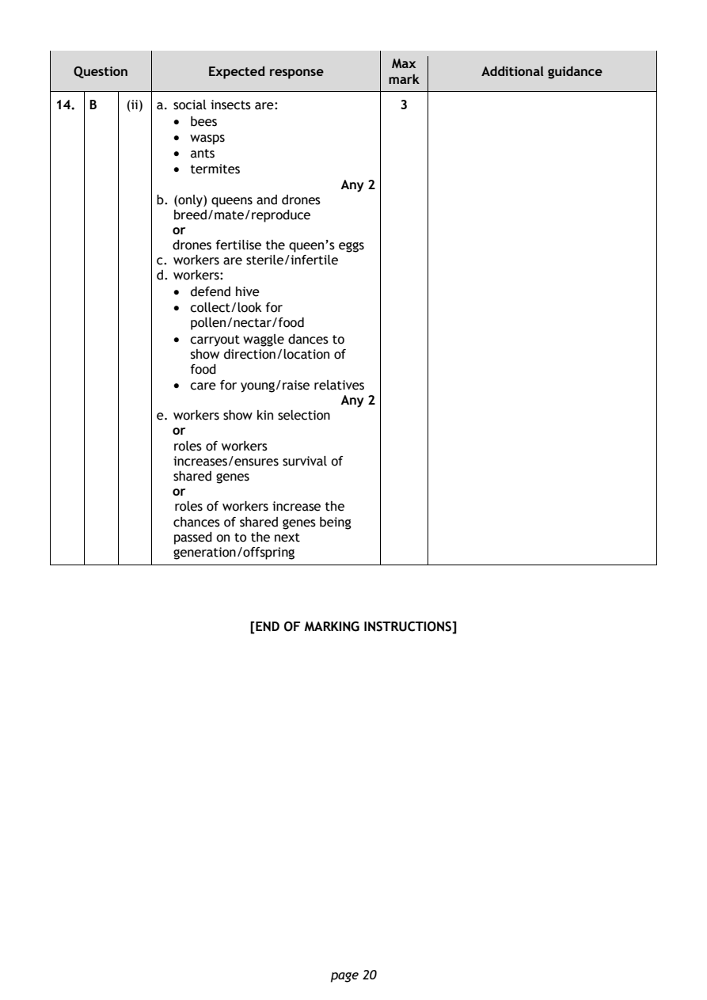
Selectable page text
Max
Question Expected response Additional guidance
mark
14. B (ii) a. social insects are: 3
• bees
• wasps
• ants
• termites
Any 2
b. (only) queens and drones
breed/mate/reproduce
or
drones fertilise the queen’s eggs
c. workers are sterile/infertile
d. workers:
• defend hive
• collect/look for
pollen/nectar/food
• carryout waggle dances to
show direction/location of
food
• care for young/raise relatives
Any 2
e. workers show kin selection
or
roles of workers
increases/ensures survival of
shared genes
or
roles of workers increase the
chances of shared genes being
passed on to the next
generation/offspring
[END OF MARKING INSTRUCTIONS]
page 20